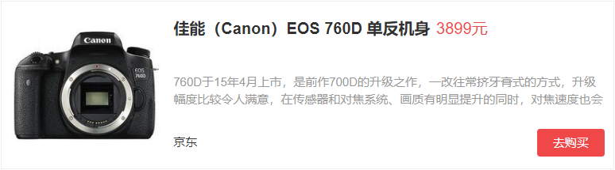
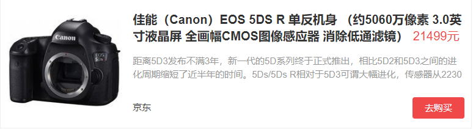
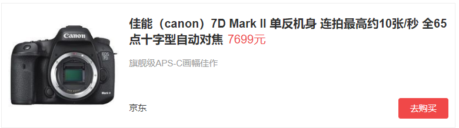
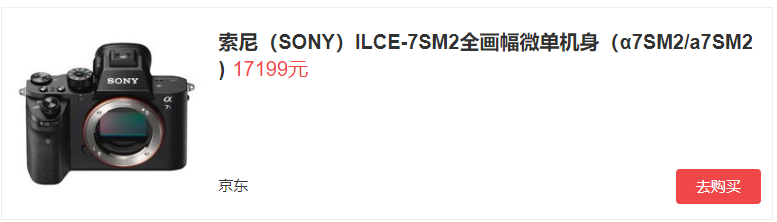

单反选购：入门款、发烧友、性能党、大师级入门者 这个群体有很多，很多人从手机和卡片上转到单反这边，面对五花八门的器材和品牌往往一筹莫展，单反走到今天，大致的品牌或者卖的好的几个牌子大致也就是佳能、尼康、SONY、宾得等了，因为是入门所以个人推荐只选择佳能或者尼康，作为日系旗舰产品线比较丰富，镜头群也够用还有第三方的腾龙不时出几个好镜头，基本上够用了，器材的预算上从3000-6000之间，量力而行，如果只想单纯的拍拍照，发发微博 微信基本上这个价位的相机基本能满足，代表机型有以下几款,佳能入门2款，760D 15年上市价格适中作为入门机还是不错的，适合想学生党加上几个镜头，基本5000元打住，红圈不算。  发烧友 这个级别基本上有啥新机就入啥机，从以前的5DM1-M3到这些年的5DS 5DSR，都是发烧友们的标配，当然也有旗舰党系列，N家D3X D3S D4等都是退休老爷爷经典款系列，经常在公园看到老爷爷们拿着D4配尼康AF VR80-400mm打鸟，这个级别无所谓器材的选择，什么贵买什么，只要能接受价格，其他的无所谓，到是没见过外面有人拿哈苏的，想想发烧玩到哈苏这个级别也是蛮吊的。 5dsr作为中段旗舰买的人还是很多，毕竟5dmark列打下的名头还是很吃香的,全画幅和5060万像素保证了照片质量，只需按下快门，一张好照片就轻松入眼。  性能党 这个就得详细点了，毕竟很多玩摄影的并不是很有钱，如何合理的利用手中的钱买到性价比高的机器和镜头是每个摄影党困扰已久的话题，新旧相机的交替，全画幅的跟进，像素的高低，都是买相机要考虑的问题，这里就个人选择推荐几款机子，镜头的选择在下面继续，这里有个论点，APS-C画幅和全画幅的选择 先说说APS-C，由于APS-C出来的早，大部分镜头和相机厂商都根据这种规格的传感器来制造的镜头，APS-C机器可以兼容全幅镜头只不过照片面积缩小了，全幅机器如果安装了APS-C镜头的话可能会出现所谓的黑圈就是暗角，并不能发挥全画幅的传感器尺寸，全画幅值不值得买，当然，全画幅虽然没有传说中那么神话但是很多镜头都是为全画幅设计的，如果不买全画幅相当于隐藏的BUFF没激活，既然追求性价比，买相机就一次性到位，这点仅仅针对愿意在摄影上下功夫的人，不适用于入门，全画幅的相机基本上在10000这个价位上下浮动，加上一二个好镜头基本上15000左右 超过2W就谈不上性价比了。 这里就有很多APS-C和全画幅的机子的选择，APS-C主打机型C家7DMARKII，7D的升级版，7d2承袭7系列速度机型的传统，拥有佳能目前最先进的对焦系统，以及10张/秒高速连拍的强悍性能，良好的操控性，上手速度快，不容易跑焦，镜头群广，都是选择这款机器的理由之一，不到8000的价格也是十分亲民。  大师 这个级别，单反不单反已经没啥意义了，很多大师出门都是卡片或者微单都可以拍出很有味道的照片，其实摄影器材不是决定摄影作品好坏的标准，想以前几百万像素的年代一样可以出好片，只不过我们没有到达大师那个级别，跟小说中的高手一样，心中有剑，草木皆可成剑，摄影也一样，微单的便携加上像素保证已经成为越来越多人的青睐。 首推SONY的A7SM2,搭载全画幅五轴防抖机构 117点相位对焦检测系统,2430万像素的全画幅CMOS可以随时都可以轻松拍摄和创作。  |
| 返回上一级 |